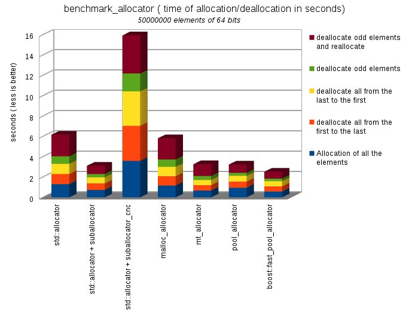
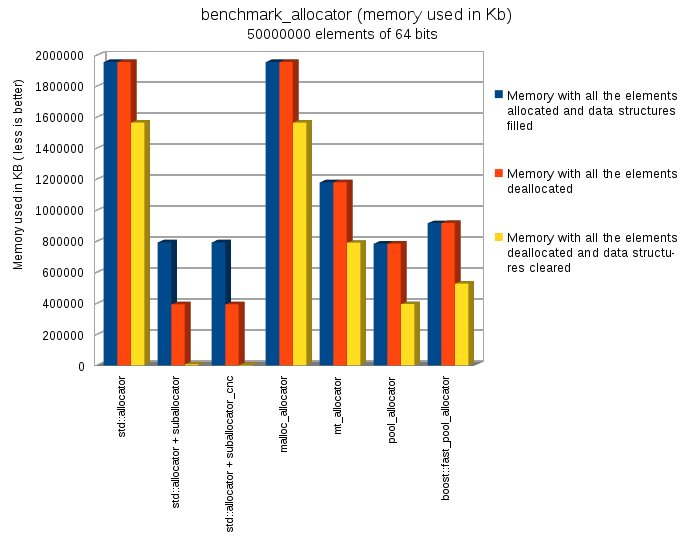
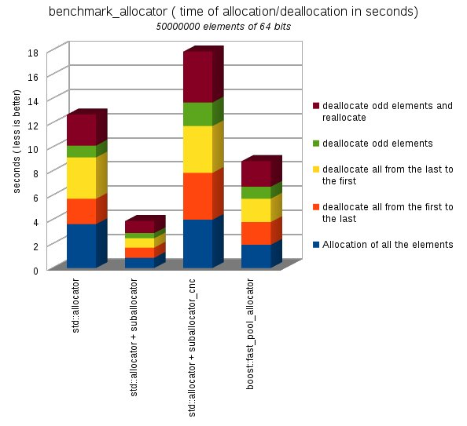
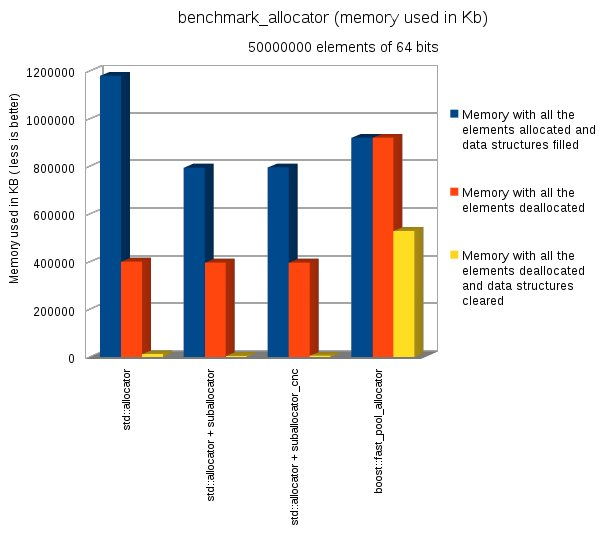
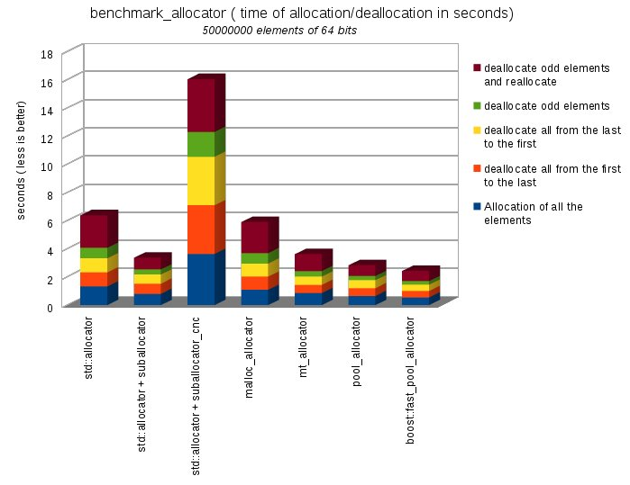
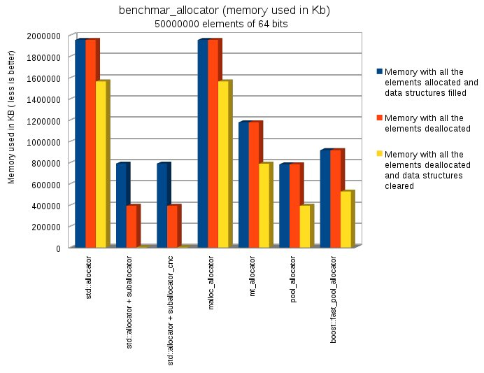

The test had been done with GCC 4.7 (64 bits) and run on a QuadCore 2.4
GHz ( 8 GB of Dual Channel 1066 MHz Memory) with the C++0x options
activated, and with the highest level of optimization. IMPORTANT! The results of the
benchmarks have a great dependency of the processor, and the size of the
cache.
Allocate
50.000.000 elements of uint64_t
The benchmark of the suballocator is a vector of pointers to elements
uint64_t. The size of the vector is 50.000.000 elements. This vector is
obtained from dynamic memory, and is used for to link the elements
obtained from the allocator.The allocator is selected from a menu .
The left graph shows the time of the 5 operations over the allocator .
We take the time with the function clock(
)
Allocate 50000000 elements of 64 bits
Deallocate all from the last to the first
Deallocate all from the first to the last
Deallocate odd elements
Deallocate odds elements and reallocate
The right graph shows the memory used by the program in 3 moments:
The vector of pointers had been created and 50.000.000 elements
uint64_t allocated
The vector of pointers had been created and 50.000.000 elements
uint64_t had been deallocated
The vector of pointers had been deleted and 50.000.000 elements
uint64_t had been deallocated
This second graph shows the memory consumption, and the capability of
the allocators for to return memory to the operating system and decrease
the memory used by the program
Allocate
30.000.000 elements uint64_t and insert in a std::set
The second Benchmark is the insertion of several collections of
30.000.000 numbers of 64 bits in a std::tree. You select the allocator
from a menu
This graph is very important,
because show other important property of the allocators. The time
spend by the allocator in the insertion of a number in the set is
less than 1%. As you can see we save around 35%.of the time The
allocator always provide the first position free. This provide us a
very compact data area, and this improve the cache performance.
The left graph is the time consumed, and the right is the memory used
by the allocator when the 30.000.000 elements are allocated , and
after when are freed, and the std::set is empty. This shows the memory
consumption, and the capability of the allocators for to return memory
to the operating system and decrease the memory used by the program
* The source code of malloc_allocator, mt_allocator and pool_allocator
is in a directory of the GCC compiler (
In my computer /usr/include/c++/4.7/ext). Check if your CLANG
compiler access to this directory, for to compile the benchmark programs
4.6.1.-
Benchmarks GCC 4.7
BENCHMARK_ALLOCATOR
Time ( less is better)
This program make allocations and deallocations of
50000000 elements of 64 bits checking the time needed (
less is better)
Allocation of all the elements
deallocate all from the first to the last
deallocate all from the last to the first
deallocate odd elements
deallocate odd elements and reallocate
TIME TOTAL
std::allocator
1,307
0,998
0,998
0,746
2,121
6,17
std::allocator + suballocator
0,74
0,64
0,591
0,322
0,822
3,115
std::allocator + suballocator_cnc
3,594
3,445
3,392
1,752
3,753
15,936
malloc_allocator
1,165
0,917
0,914
0,741
2,089
5,826
mt_allocator
0,671
0,525
0,524
0,384
1,16
3,264
pool_allocator
0,959
0,593
0,572
0,286
0,832
3,242
boost::fast_pool_allocator
0,577
0,51
0,51
0,257
0,675
2,529

BENCHMARK_ALLOCATOR memory size ( less is better)
This program make allocations and deallocations of
50000000 elements of 64 bits checking the memory size used
( less is better)
Memory with all the elements allocated and
data structures filled
Memory with all the elements deallocated
Memory with all the elements deallocated and
data structures cleared
std::allocator
1954092
1954332
1563784
std::allocator + suballocator
791488
392276
5964
std::allocator + suballocator_cnc
792460
392288
2004
malloc_allocator
1954092
1954332
1563748
mt_allocator
1178988
1179264
788720
pool_allocator
783868
783984
393400
boost::fast_pool_allocator
915880
916168
525620

4.6.2.-
Benchmarks VC++ 13
BENCHMARK_ALLOCATOR
Time ( less is better)
This program make allocations and deallocations of
50000000 elements of 64 bits checking the time needed (
less is better)
Allocation of all the elements
deallocate all from the first to the last
deallocate all from the last to the first
deallocate odd elements
deallocate odd elements and reallocate
TIME TOTAL
std::allocator
3,619
2,09
3,416
0,982
2,558
12,665
std::allocator + suballocator
0,842
0,842
0,764
0,436
0,998
3,882
std::allocator + suballocator_cnc
3,9852
3,8772
3,8502
1,9531
4,2062
17,8719
boost::fast_pool_allocator
1,918
1,872
1,934
0,982
2,121
8,827

BENCHMARK_ALLOCATOR memory size ( less is better)
This program make allocations and deallocations of
50000000 elements of 64 bits checking the memory size used
( less is better)
Memory with all the elements allocated and
data structures filled
Memory with all the elements deallocated
Memory with all the elements deallocated and
data structures cleared
std::allocator
1179488
399428
11436
std::allocator + suballocator
793676
395000
3128
std::allocator + suballocator_cnc
794808
395568
4268
boost::fast_pool_allocator
919240
919240
527852

4.6.3.-
Benchmarks CLANG 3.3
BENCHMARK_ALLOCATOR
Time ( less is better)
This program make allocations and deallocations of
50000000 elements of 64 bits checking the time needed (
less is better)
Allocation of all the elements
deallocate all from the first to the last
deallocate all from the last to the first
deallocate odd elements
deallocate odd elements and reallocate
TIME TOTAL
std::allocator
1,3209
0,999
1,001
0,745
2,304
6,3699
std::allocator + suballocator
0,801
0,72
0,65
0,358
0,833
3,362
std::allocator + suballocator_cnc
3,626
3,467
3,439
1,762
3,743
16,037
malloc_allocator
1,085
0,932
0,935
0,744
2,205
5,901
mt_allocator
0,853
0,588
0,585
0,387
1,2
3,613
pool_allocator
0,647
0,558
0,558
0,299
0,77
2,832
boost::fast_pool_allocator
0,543
0,452
0,454
0,253
0,722
2,424

BENCHMARK_ALLOCATOR memory size ( less is better)
This program make allocations and deallocations of
50000000 elements of 64 bits checking the memory size used
( less is better)
Memory with all the elements allocated and
data structures filled
Memory with all the elements deallocated
Memory with all the elements deallocated and
data structures cleared
std::allocator
1954176
1954324
1563772
std::allocator + suballocator
790576
392232
1968
std::allocator + suballocator_cnc
790568
392248
1968
malloc_allocator
1954108
1954332
1563780
mt_allocator
1179000
1179260
788712
pool_allocator
782896
783144
392592
boost::fast_pool_allocator
915904
916168
525616

<<<<<<< HEAD
=======
>>>>>>> a638c30ad722b2664968a5babd793174f3466a44
 Boost
C++ Libraries
Boost
C++ Libraries